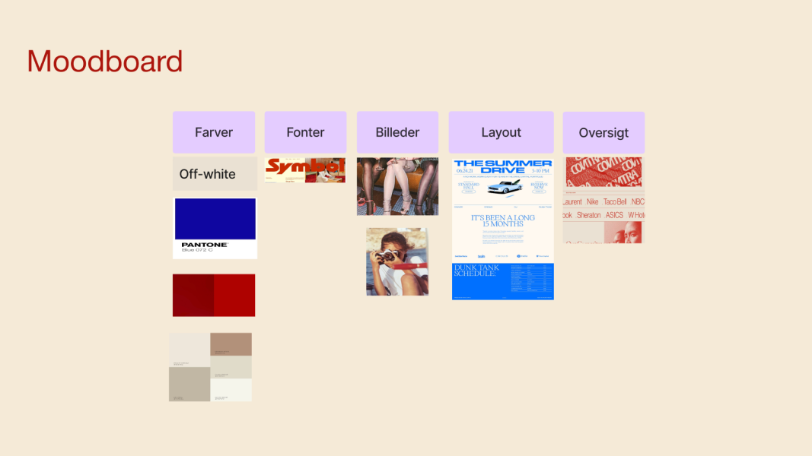
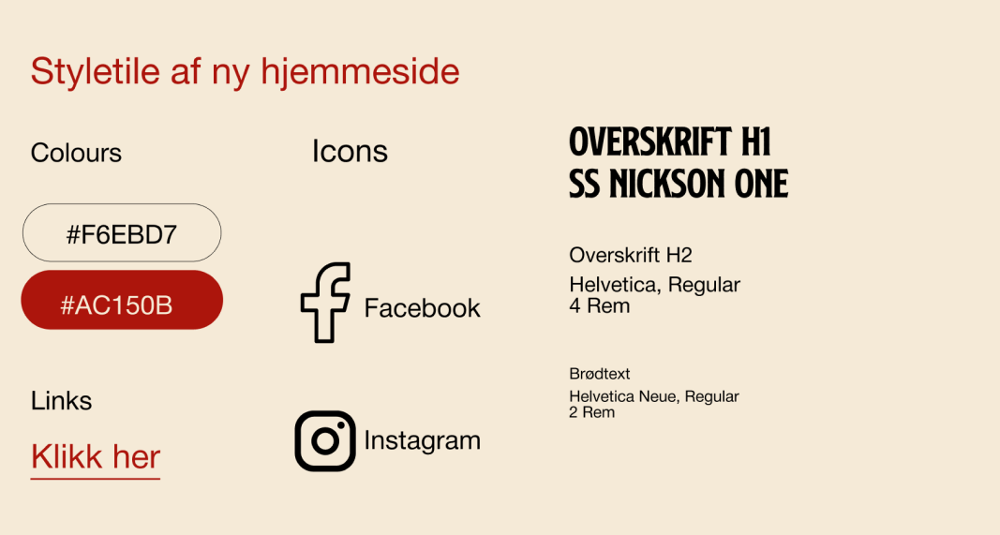
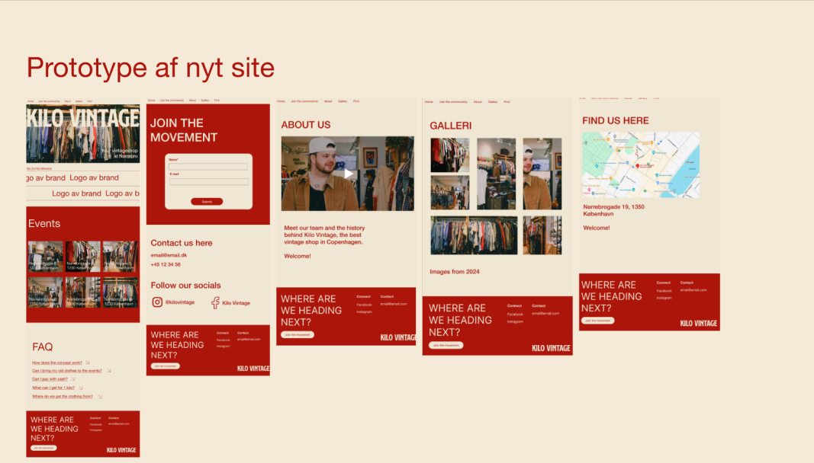
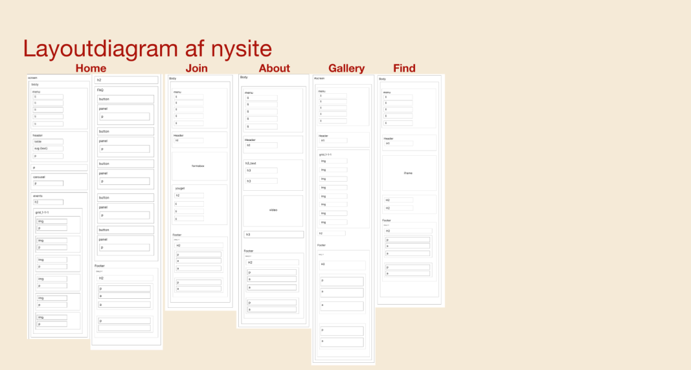
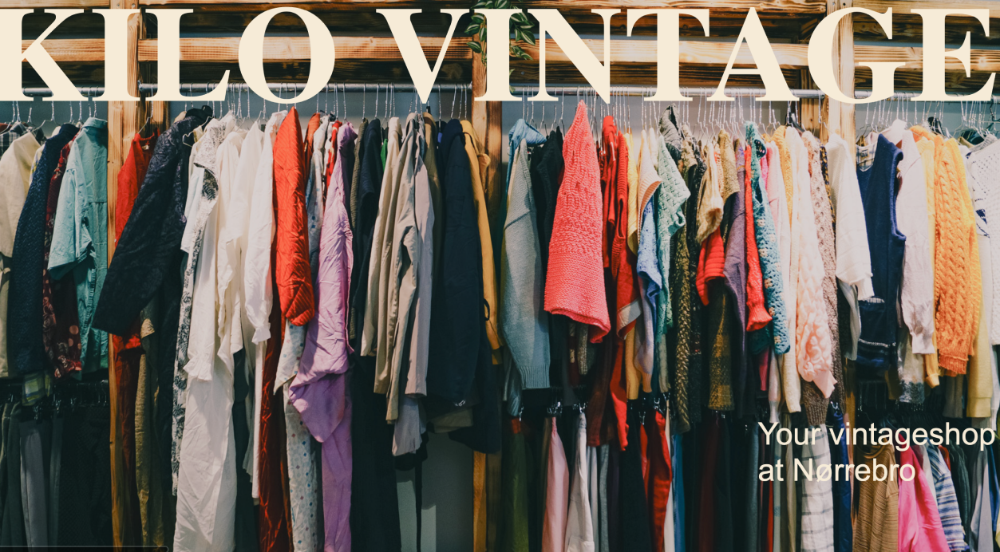
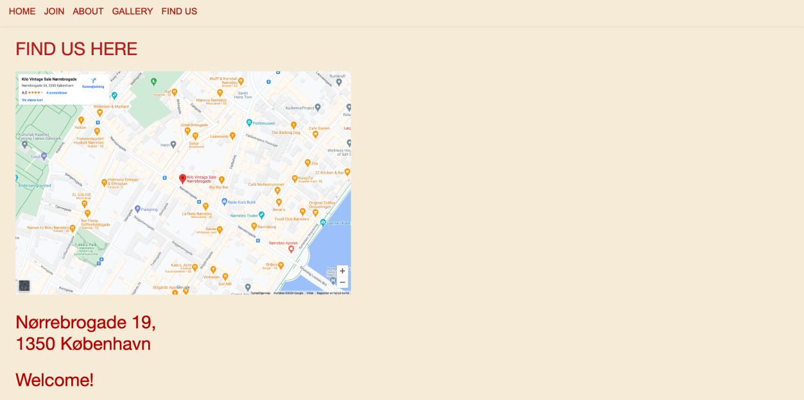
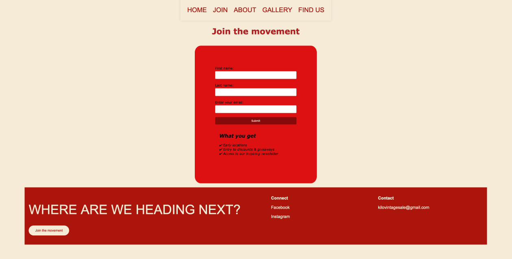
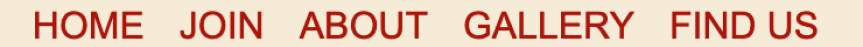
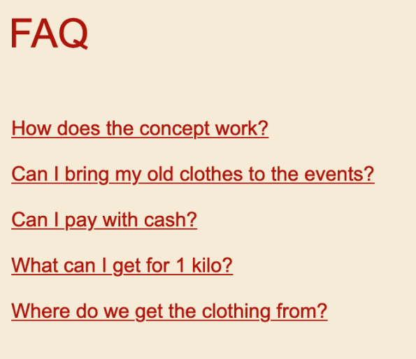
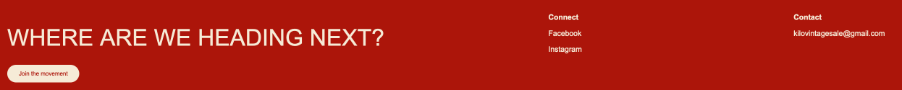

Grundlæggende
INDHOLD
Hvad har jeg lært
Vi startede det sidste forløb, for med blive inddelt i grupper. Vi blev her stillet til opgave at lave 2 produkter: Et videosite hvor vi var sammen to og to, og til sidst en case, hvor vi skulle redesigne en hjemmeside af en eksisterende virksomhed.
Video Produktion
Var den første lille opgave vi skille lave. Her fik jeg kendskab til at lave en videoproduktion, herunder præproduktion, optagelse og postproduktion. Videoen skulle redigeres i Adobe Premiere pro.
KILO VINTAGE SALE / case
Nu var det tid til den “store opgave”. Gruppen blev her samlet til fire personer, og vi skulle sammen finde en eksisterende virksomhed, hvis hjemmeside vi gerne ville redesigne. Vi skrev ud til Gud og hver mand, men vi endte med at gå med virksomheden: KILO VINTAGE SALE.
Vi startede alle med at lave en bred brainstorming på, hvordan vi tænkte hjemmesidens look kunne være.
 Vi var heldigvis enige om, at vintage-looket var mega fedt. Vi fandt derfor vores ønsket: Farver, billeder, fonte, icons og links, der skulle indgå.
 Så var det tid til prototypen. Vi fik hver en side, som vi skulle designe på, men fælles for dem alle var: Menuen og footeren.
Det sidste billede, er vores layout diagram. Dette diagram, hjalp os alle med at kode hjemmesiden.
     Bedømmelse: 5 / 5 stjerner
Virkelig et fedt forløb. Jeg lærte at samarbejde på tværs af tre forskellige sprog, gå på kompromis, samt at få min Iframe til at virke. Jeg var også indover After Effect og lottiefiles.
SE SITE